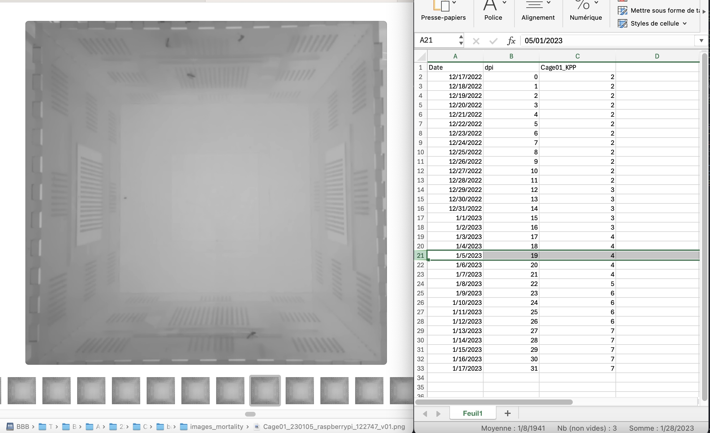

- 5.1 - Overview of analysis scheme
- 5.2 - Generate raw data time series
- 5.3 - Day-to-day variability
- 5.4 - Long-term trends
- 5.5 - Comparing different conditions
5.2 - Time series
After concatenating the tracking files from all the videos, you should end up with a single file called "analyzed_data.pkl"
Before loading that file in the app, you should count the number of dead mosquitoes over the course of the experiments. The data should be stored in a excel file that looks like below and which name starts with "death_count", such as this one
To count the number of dead mosquitos you can either do it directly by checking the cage every week upon changing the sugar feeder, or you can also extract it from the background images generated in the tracking steps earlier. Indeed in the "images_mortaliy" folder, you will find one background image per video. By design, mosquitoes that show up in these images did not move over 100 videos, i.e. 30hours, which is equivalent to being declared a dead mosquito. For instance in this image, there is 3 dead mosquitoes. The easiest way is go day by day (1 day 1 line), by checking only the images corresponding to a fixed time of the day. The smartest way is to pick that time to be the peak activity of you mosquitos populations, since at that time pretty much all alive mosquitos fly a long-term and will not be visible in the background image for sure.
Then by scrolling through all the background images it is usually straightforward to see when there is a new dead mosquitos, as you can see in this video :